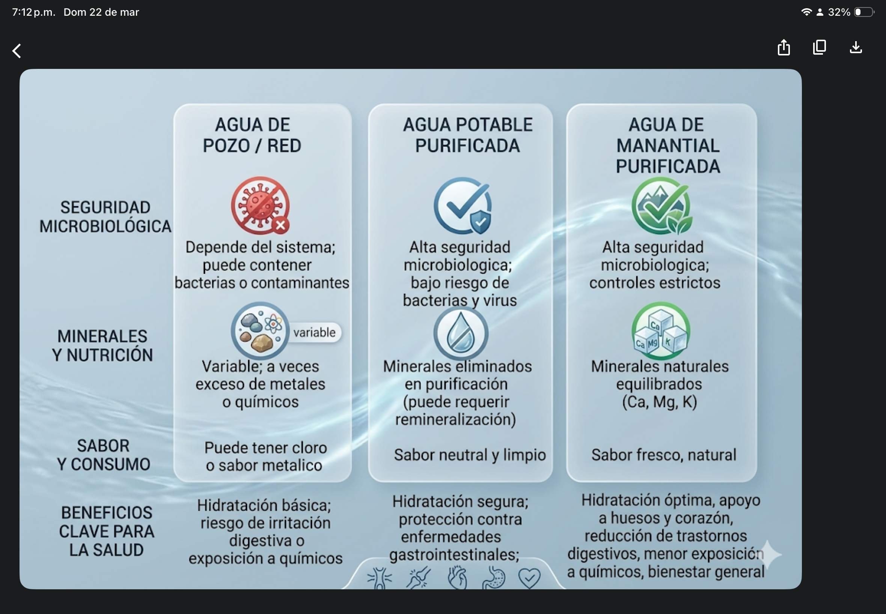

<!-- =============================
       COMPARATIVO
  ============================== -->
<link rel="stylesheet" href="css/base.css">
<link rel="stylesheet" href="css/layout.css">
<link rel="stylesheet" href="css/componentes.css">
<link rel="stylesheet" href="css/pages.css">
  <section class="section">
    <h2>Comparativo de Tipos de Agua</h2>
    
  </section>

